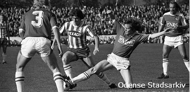
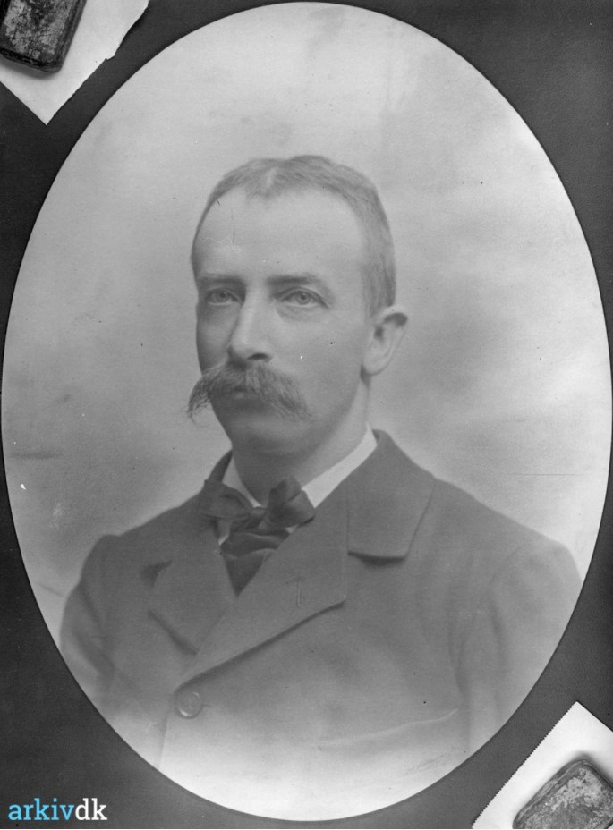

Opstarten af klubben
OB blev stiftet i 1887 og startede ud med at være en Cricket klub. Det er begyndelsen på OB's historie.

Manden der var med til at starte det hele, var OB's første formand Max Schmidt
OB blev stiftet i 1887 og startede ud med at være en Cricket klub. Det er begyndelsen på OB's historie.
Manden der var med til at starte det hele, var OB's første formand Max Schmidt
OB var en af de første klubber, som implementerede fodbold ind i deres klub. Det var i 1889 Odenses fodboldeventyr startede.
I 1894 blev der bygget videre på klubben og fik derfor også tildelt deres eget område i Munke Mose.